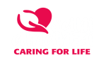
SANI AMANZI™ Water Sanitising & Purification Solution
Caring for Life
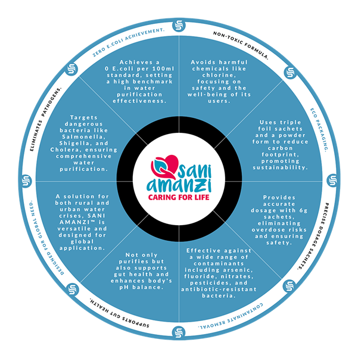
Global water crisis
Safe water is a human right not a luxury
More than 2 billion people are currently trapped in water-stressed countries, while shockingly, a staggering 900 million individuals continue to endure the daily torment of lacking access to clean drinking water. This grim reality signifies that over 1 in every 8 people across the globe is living without this basic necessity.
The gravity of this crisis cannot be overstated. Access to safe drinking water is not a luxury but a fundamental human right, essential for our very survival and well-being.
What adds to the shock is the stark fact that contaminated water claims more lives than the combined toll of diseases like Malaria, COVID-19, and AIDS.
Contaminated water breeds and spreads deadly diseases like Cholera, Diarrhoea, Dysentery, Hepatitis A, Typhoid, and Polio, leaving a trail of suffering and death in its wake.
In line with the United Nations’ declaration that “Everyone has the right to sufficient, continuous, safe, acceptable, physically accessible, and affordable water for personal and domestic use,” this ongoing water crisis should serve as a resounding wake-up call. It highlights the urgent need for immediate and concerted action to address this dire global issue.
Introducing SANI AMANZI™, a cutting-edge point-of-use solution that is not only affordable but also highly practical for all those exposed to contaminated water sources. This innovative product effectively eliminates waterborne pathogenic bacteria through a unique blend of safe active ingredients.
Developed by a team of experts deeply knowledgeable about the challenges posed by contaminated water, SANI AMANZI™ stands out as the ultimate solution to the clean water crisis.
Furthermore, SANI AMANZI™ demonstrates exceptional effectiveness against antibiotic-resistant bacteria and successfully eradicates a wide spectrum of pathogenic microbes. What sets this product apart is its ingenious design, incorporating an inorganic, natural, and non-polluting reagent.
SANI AMANZI™ is poised to revolutionise access to clean water and make a significant impact on global health.
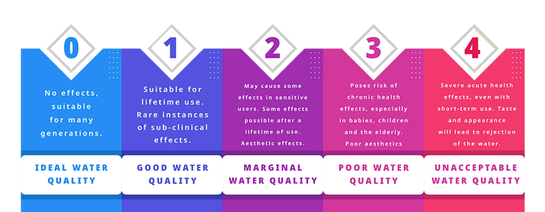
Water Quality Classification
SANI AMANZI™ has been tested by accredited SANAS laboratories using the SANS 241-1:2015 Drinking Water Standards and the WRC Domestic Use Standard classification system (see diagram). After vigorous testing of SANI AMANZI™ it was determined that the samples collected and treated displayed physical, chemical and bacteriological qualities that were deemed as fit for use as potable water and for domestic use purposes. The WRC classified SANI AMANZI™ as being of “Good Water Quality” (class one); meaning treated water was suitable for life-time use, with rare instances of sub-clinical effects.
To gain more insight into the WRC Domestic Use Standard classification system please visit www.wrc.org.za.
Transparency
Tested on real-world water 99.99% pathogen reduction
The WRC Domestic Use Standard classification system
Scientific Sanitation Solutions are always striving to achieve breakthrough discoveries in chemistry, to make effective clarification possible every time. Any Point-of-Use product claiming to be 100% successful in the clarification of water every time, irrespective of pH and other chemistry influences, are misleading and false.
We take great pride in providing our customers with full transparency, and have tested SANI-AMANZI™ on the most contaminated of water sources in South Africa to ensure we meet our efficacy standard goals of eliminating 99.99% of waterborne pathogenic bacteria and this remains our core goal to this very day.
Sustainability
Environmentally responsible plastic-free
In recognition of the climate crisis and our responsibility to do all we can to reduce the amount of plastic waste harming our environment, SANI AMANZI™ has been purposefully designed to reduce, and wherever possible, stop plastic bottle contamination.
With our “plastic-free” principle in mind, SANI AMANZI™ has been packaged via powder sachet as an alternative to liquid purifiers on the market. All you need is a sachet of SANI AMANZI™ and water to fill your bucket and you will have a powerful and environmentally friendly water purifier.
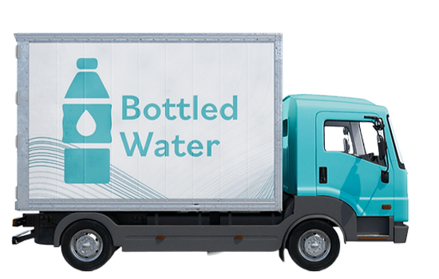
We do not only believe in eradicating pathogens but also reducing our carbon footprint. By using a SANI AMANZI™ sachet as an alternative to bottled water or liquid water purifiers this means that less trucks are required for transportation, thus being more friendly on the environment.
Product highlights
Key characteristics
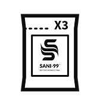
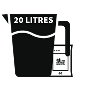
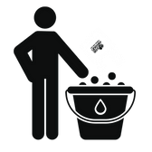
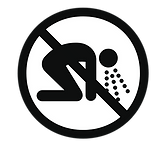
How to use
Instructions for use
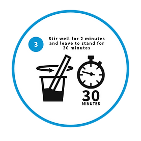
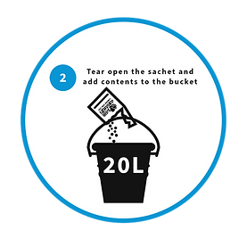
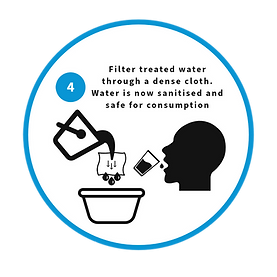
World’s Best Water Purifier?
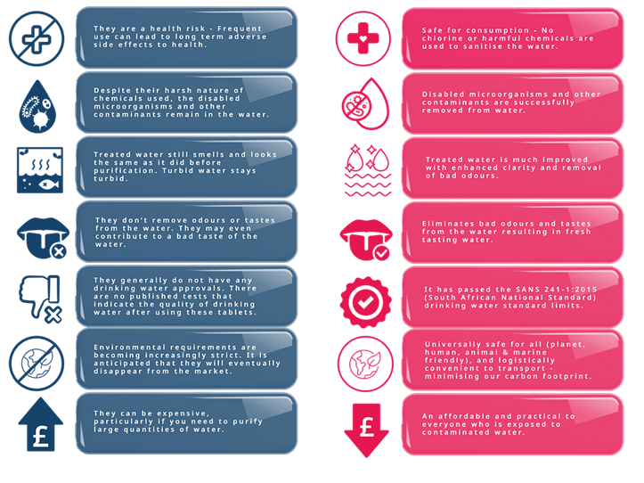
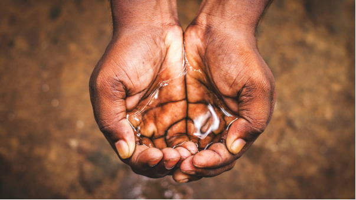
Why it matters
Innovation for safe water every community
In a world where the availability of safe drinking water remains a paramount concern, SANI AMANZI™ rises as a beacon of innovation and hope. Against the backdrop of an alarming statistic, the imperative need for a transformative solution has become more pressing than ever. SANI AMANZI™ takes centre stage as a pioneering point-of-use water purifying solution, reshaping the landscape of clean water accessibility.
“1 in 3 people globally do not have access to safe drinking water”
UNICEF / World Health Organization Report
According to the World Health Organization (WHO) and UNICEF, approximately 2.2 billion people worldwide do not have access to safely managed drinking water services.
Our purpose
Why we do, what we do
- According to the World Health Organization (WHO) and UNICEF, approximately 2.2 billion people worldwide do not have access to safely managed drinking water services. This means that a significant portion of the global population lacks access to clean and safe water sources, putting them at risk of waterborne diseases and related health issues.
- In many developing regions, particularly in sub-Saharan Africa, women and children spend hours each day collecting water from distant sources. On average, women and girls in sub-Saharan Africa collectively spend about 40 billion hours per year collecting water, which equates to approximately 16 million individuals spending an average of 2.5 hours each day fetching water.
- Unsafe water, poor sanitation, and inadequate hygiene cause more deaths annually than all forms of violence, including wars. In 2019, the World Health Organization (WHO) estimated that around 1.5 million deaths were attributed to waterborne diseases, making it a significant global health concern.
Differentiation
What sets sani amanzi apart from other purifiers
SANI AMANZI™ isn’t just another entry in the realm of water purifiers – it’s a revolutionary leap forward. While many products claim to offer clean water solutions, SANI AMANZI™ sets itself apart through a combination of cutting-edge technology, affordability, and practicality that speaks directly to the needs of individuals and communities exposed to contaminated water sources.
Behind the creation of SANI AMANZI™ lies a culmination of expertise from a team deeply entrenched in understanding the intricacies of contaminated water challenges. This amalgamation of scientific knowledge and practical experience has resulted in a solution that doesn’t merely purify water, but addresses the complex web of issues surrounding waterborne pathogens and contaminants.
What once was considered solely a concern for rural areas has transcended boundaries, becoming an urgent urban crisis as well. SANI-AMANZI™, however, remains steadfast in the face of evolving challenges. Its efficacy extends beyond conventional bacteria to encompass antibiotic-resistant strains – a testament to its remarkable capability in tackling a broad spectrum of pathogens.
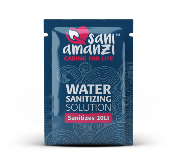
Central to SANI AMANZI™’s potency is its innovative reagent, an inorganic composition derived from natural, non-polluting substances. The use of inorganic raw materials underscores a commitment to both efficacy and environmental responsibility. Moreover, SANI-AMANZI™ not only purifies but nourishes. With a formula that supports diverse gut microbiota, it contributes to overall health while acting as a detoxifier, thus enhancing the body’s pH balance.
SANI-AMANZI™ also prioritises the well-being of its users. Every facet of its design is meticulously crafted to ensure that once diluted, the product is not only effective but also safe for human consumption. Moreover, SANI-AMANZI™ stands out from liquid alternatives in the market by incorporating a precise dosage mechanism (6g per sachet). This innovative feature eradicates the possibility of overdosing, setting a new benchmark in safety and accuracy that redefines the landscape of water purification solutions.
In a market flooded with choices, SANI AMANZI™ stands out as an embodiment of innovation, efficacy, and a steadfast commitment to delivering clean, safe water to every corner of the globe.
Benefits
Key advantages of using Sani Amanzi
- Innovative Packaging: Encased within compact 6g sachet, each sachet effectively purifies up to 20 litres of contaminated water, making it a practical solution even in resource-constrained environments.
- Convenient Powder Formulation: Its powdered formulation not only facilitates easy transport but also ensures effortless utilisation, regardless of the location.
- Robust Pathogen Eradication: SANI-AMANZI™’s efficacy extends to formidable pathogens such as Salmonella, Shigella, and Cholera, ensuring comprehensive and reliable water purification.
- Exceptional Effectiveness: Demonstrating an exceptional sanitising efficacy rate of 0 (ZERO) E.coli per 100ml, it sets an unprecedented benchmark in water purification performance.
- Accurate Dosage: In contrast to liquid alternatives, SANI-AMANZI™ eliminates the risk of overdose by delivering precise and consistent dosages within each sachet.
- Chemical-Free Approach: Committed to user health and safety, SANI-AMANZI™ avoids the use of chlorine or other harmful chemicals, prioritising the well-being of its consumers.
- Premium Packaging: Triple foil sachets guarantee that SANI-AMANZI™ arrives in optimal condition, preserving its potency and reliability for maximum effectiveness.
- Sustainability Focus: SANI-AMANZI™ contributes to a reduced carbon footprint through its innovative packaging, making it an eco-friendly water purification solution.
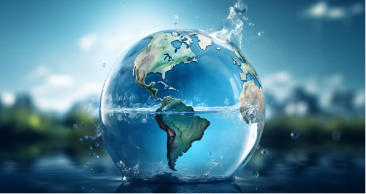
A shield against deadly pathogens
Designed to protect against a spectrum of waterborne threats, SANI-AMANZI™ guarantees the purity and quality of the water you consume. Its remarkable efficacy stems from its ability to destroy 99.99% of bacteria, viruses, and protozoa present in the water, shielding consumers from potential health hazards.
One of SANI-AMANZI™’s distinct advantages lies in its capacity to neutralise key threats, including the notorious Salmonella, Shigella, and E. coli. These pathogens are known culprits of severe gastrointestinal illnesses, and SANI-AMANZI™ ensures they are effectively eradicated. Moreover, it tackles cryptosporidium and oocysts, which are often responsible for waterborne infections and digestive discomfort.
A standout feature of SANI-AMANZI™ is its remarkable sanitising efficacy. It achieves a sanitising efficacy of 0 (ZERO) E.coli per 100ml, a testament to its rigorous purification process and commitment to water safety.
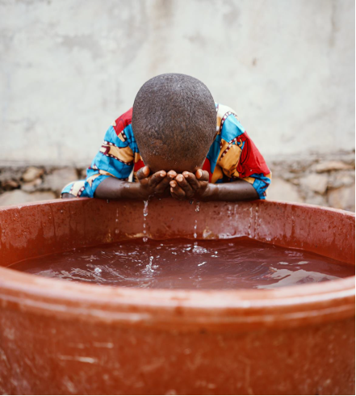
Contaminants
What contaminants can sani amanzi remove from water?
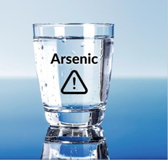
Arsenic
Arsenic is a natural element that can contaminate water sources through geological processes and human activities. In its inorganic form, it poses health risks when consumed.
Long-term exposure, often through drinking water, has been linked to cancer, skin issues, cardiovascular problems, neurological effects, and more.
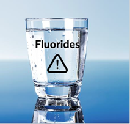
Fluorides
Fluorides are naturally occurring compounds that can be found in soil, rocks, and water sources. In water, fluoride ions are derived from the dissolution of minerals like fluorite.
While fluoride is often associated with dental health due to its role in preventing tooth decay, excessive levels of fluoride in drinking water can pose health risks.
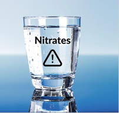
Nitrates
Nitrates, composed of nitrogen and oxygen, are natural components found in soil, water, and fertilisers. While they themselves are generally safe, elevated nitrate levels in drinking water, often from agricultural runoff, can lead to health risks.
Within the body, nitrates can undergo conversion to nitrites, which can impact the blood’s ability to transport oxygen.
Pesticides
Pesticides are chemicals used to control pests in agriculture, but improper use can lead to their presence in water sources.
They enter water through runoff, irrigation, and accidents, impacting aquatic life and potentially human health.
Pesticide contamination varies in effects, from neurological issues to increased cancer risk, depending on type and concentration.
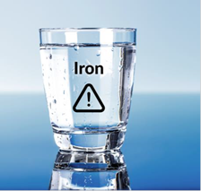
Iron
Excessive iron in drinking water, while a natural element, can lead to discolouration and taste issues. Soluble iron can transform into insoluble rust, causing water to appear reddish or brownish.
This discolouration not only affects aesthetics but can also alter taste.
Additionally, high iron intake can result in stomach discomfort, particularly for those with certain medical conditions.
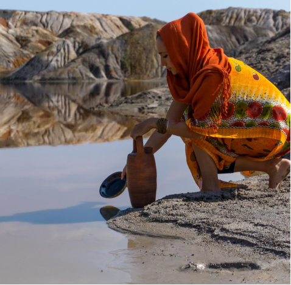
Addressing anti-biotic resistant bacteria in water
Antibiotic-resistant bacteria are strains of microorganisms that have developed the ability to withstand the effects of commonly used antibiotics. This phenomenon poses a significant challenge, especially in developing regions, where access to advanced medical care is limited. These resilient bacteria can thrive in water sources, magnifying the existing health risks in communities already facing limited healthcare resources.
In areas where clean water is scarce and sanitation infrastructure is inadequate, the presence of antibiotic-resistant bacteria in water sources compounds the health dangers. Consuming or using contaminated water can lead to the spread of infections that are not easily treatable, resulting in prolonged illnesses and heightened healthcare expenses. The rise of antibiotic-resistant bacteria amplifies the urgency for effective water purification solutions tailored to the needs of these regions.
Against this backdrop, SANI AMANZI™ emerges as a beacon of hope. Its innovative water purification approach not only ensures water safety but also addresses the challenges posed by antibiotic-resistant bacteria. By effectively neutralising even the most resilient microorganisms, including antibiotic-resistant strains, SANI AMANZI™ contributes to the health and well-being of communities in developing regions.
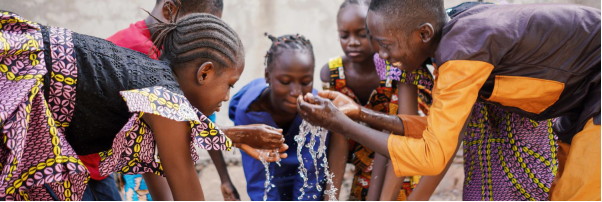
No chlorine, no problem!
SANI AMANZI™ stands as a remarkable solution in the realm of water purification, distinguished by its chlorine-free approach. Unlike traditional methods that often rely on chlorine for disinfection, SANI AMANZI™ offers a significant advantage by steering clear of this chemical element. While chlorine can effectively eliminate contaminants, it often leaves an undesirable footprint, introducing taste and odour complexities to the treated water. In contrast, SANI AMANZI™’s innovative chlorine-free process ensures that purified water remains free from these unpleasant aftereffects, preserving its natural and revitalising taste.
Beyond the matter of taste, the absence of chlorine brings an additional layer of safety. Chlorine-based purification methods have the potential to form harmful disinfection byproducts when they react with organic matter present in water. By adopting a chlorine-free approach, SANI AMANZI™ averts the creation of these potentially detrimental compounds. In doing so, it not only guarantees the safety of the purified water but also enhances the overall drinking experience by providing water that is not only pure but also genuinely satisfying to the palate.
Standards
The classification of drinking water
Water classification systems play a pivotal role in assessing the quality and suitability of water for various purposes. These systems are designed to categorise water based on specific parameters, ensuring that its characteristics align with the standards set for safe consumption, domestic use, and other applications. Two prominent classification systems, the SANS 241-1:2015 Drinking Water Standards and the Quality of Domestic Water Supplies Classification System by the WRC (Water Research Commission), are widely employed to evaluate water quality.
The SANS 241-1:2015 Drinking Water Standards, developed by the South African Bureau for Standards (SABS), establish guidelines for the microbiological, physical, aesthetic, and chemical attributes of drinking water. This comprehensive framework outlines permissible limits for various constituents, such as pH, electrical conductivity, total dissolved solids, chlorides, sulphates, nitrates, nitrites, ammonia, and more. Water samples are assessed against these standards to determine compliance with the prescribed criteria.
Additionally, the Quality of Domestic Water Supplies classification system by the WRC is another essential tool in evaluating water quality. This system categorises water based on its characteristics, offering insights into its potential impact on human health and overall usability. The classification system comprises several classes, each representing a different level of water quality. Ranging from “Ideal” (Class 0) to “Unacceptable” (Class 4), these classifications consider factors such as taste, appearance, health risks, and suitability for lifetime use.
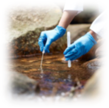
According to the WRC Domestic Use Standard, water quality can be classified as:
When assessing water quality, various variables are considered, including pH levels, electrical conductivity, total dissolved solids, turbidity, presence of pathogens like E.coli and coliform bacteria, as well as the concentrations of specific elements and compounds like fluoride, iron, and more. By comparing these variables to established standards, experts can ascertain whether water meets the required quality benchmarks.
The process of water classification involves rigorous analysis and comparison of the collected data against established limits. The aim is to ensure that water is safe for human consumption, devoid of harmful contaminants, and suitable for its intended uses. The application of these classification systems ensures that communities have access to water that meets health and safety standards, safeguarding public health and well-being.
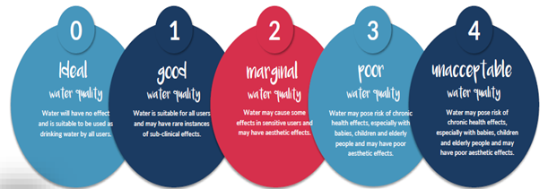
Lab results
Does sani amanzi meet testing standards?
SANI AMANZI™ has demonstrated its efficacy in meeting the SANS 241-1:2015 Drinking Water Standards and the Quality of Domestic Water Supplies Classification System set by the Water Research Commission (WRC) through rigorous testing and analysis. Please refer to independent test reports.
SANS 241-1:2015 Drinking Water Standards: SANI AMANZI™ has been tested in accordance with the parameters outlined in the SANS 241-1:2015 standard. This includes testing for various physical, chemical, and microbiological parameters such as pH, total dissolved solids (TDS), turbidity, and the absence of harmful microorganisms like E. coli and Coliforms. The results of these tests have demonstrated that water treated with SANI AMANZI™ meets the specified standards for safe drinking water quality. The absence of contaminants such as E. coli and Coliforms in treated water samples indicates its effectiveness in complying with microbiological standards.
Quality of Domestic Water Supplies Classification System by WRC: The WRC’s Quality of Domestic Water Supplies Classification System evaluates the suitability of water for different uses based on its quality. Water treated with SANI AMANZI™ has consistently shown improvements in its quality, moving from potentially contaminated states to classifications indicating better suitability for domestic use. This indicates that the treatment process employed by SANI AMANZI™ is effective in reducing microbial and other contaminant levels, aligning with the WRC’s classification system for improved water quality.
Performance
How did sani amanzi perform?
Water chemistry
Understanding TDS and the impact on water quality
Total Dissolved Solids (TDS) encompass minerals, salts, and organic compounds dissolved within water. While a certain level of TDS is natural and even beneficial for water’s taste and mineral content, elevated TDS levels can trigger a range of issues, particularly in regions facing water quality challenges. Some of the challenges of elevated TDS levels include:
- Unpleasant Taste: Water laden with high TDS often carries a salty or bitter taste, rendering it unappetising and less likely to be consumed by communities already struggling with water scarcity.
- Cloudy Appearance: Elevated TDS can lead to cloudy or murky water, adding another layer of concern for regions where access to clean and clear water is a rarity.
- Mineral Deposits: High TDS water leaves behind mineral deposits on items like glasses, faucets, and equipment. For communities without ready access to cleaning supplies, these deposits pose not only a visual issue but also a significant hygiene challenge.
- Reduced Cleaning Power: Excessive TDS interferes with the efficacy of soaps and detergents, leaving individuals with compromised cleaning agents. This is especially problematic where maintaining cleanliness is essential for health and well-being.
- Infrastructure Strain: In regions where infrastructure is already under strain, the accumulation of mineral deposits in appliances, pipes, and plumbing fixtures exacerbates efficiency concerns. This results in increased energy usage, potential damage, and further strain on limited resources.
Significant TDS reduction with our flocculant
Our product’s flocculant has showcased remarkable effectiveness in significantly reducing Total Dissolved Solids (TDS). This achievement stems from meticulous adherence to recommended protocols, encompassing the careful timing for the flocculant’s action and the subsequent filtration of water through a dense cloth. The primary aim of this TDS reduction is to address aesthetic considerations, enhancing the overall visual and sensory qualities of the treated water.
In rural African contexts, TDS doesn’t take precedence due to its limited immediate harm. Instead, the focus revolves around combating waterborne pathogens, which present substantial health risks. It’s noteworthy that TDS standards set by WHO and EPA are geared towards controlled waterworks systems, differing from the dynamic realities of rural point-of-use scenarios. For instance, while WHO suggests a TDS level of 300 ppm, the Bureau of Indian Standards (BIS) permits up to 500 ppm – a significant variance even within controlled systems.
This divergence underscores how regions like India and Africa interpret water quality standards distinctively compared to more developed nations. Although TDS levels themselves don’t directly indicate health risks, they can offer early signals of potential inorganic influences that might escalate if left unmonitored.
Conductivity and total dissolved solids share a complex relationship. Total dissolved solids encompass inorganic salts, including calcium, magnesium, potassium, sodium, bicarbonates, chlorides, sulfates, and trace amounts of organic matter, all dissolved in water. While TDS tests quantify dissolved ions, they don’t provide a nuanced understanding of their specific impact. By diligently adhering to proper protocols, SANI-AMANZI™ effectively accomplishes a substantial reduction in TDS and can aid in mitigating hard water issues. This speaks to the comprehensive capabilities of SANI-AMANZI™ as a versatile water treatment solution.
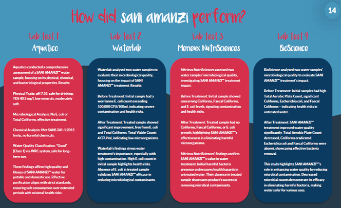
Treatment steps
Simple water treatment process
- Step 1 Add 1 sachet to 20 litres of contaminated water.
- Step 2 Stir thoroughly to create strong agitation.
- Step 3 Allow water to stand for a minimum of 30 minutes.
- Step 4 Filter treated water through a dense cloth before use.
Important note — optimal treatment performance depends on correct dosage, proper agitation, full settling time, and correct filtration protocol.
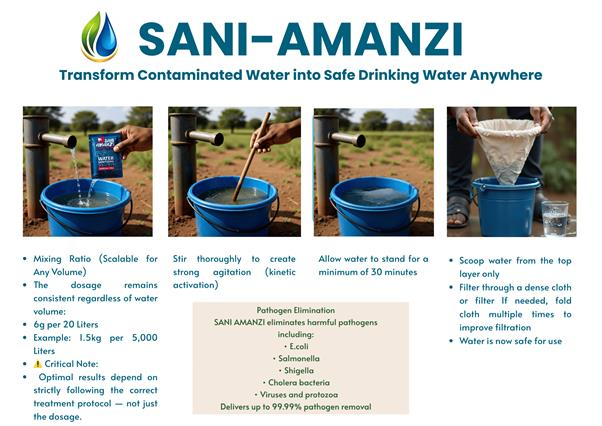
Dosage
Scalable water treatment
| Water Volume | Recommended Dosage |
|---|---|
| 20 Litres | 6g |
| 1,000 Litres | 300g |
| 5,000 Litres | 1.5kg |
SANI AMANZI™ supports scalable treatment applications across varying water volumes and operational environments.
Remember that the chemistry of each water source can vary, influencing factors such as pH, particle size, particle density, liquid density, surface charge, and water chemistry. These factors can impact the efficiency of the treatment process, so following the recommended instructions and safety guidelines is crucial to achieve optimal results. It’s also important to keep in mind the following safety guidelines when using SANI AMANZI™:
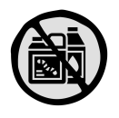
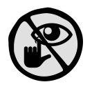
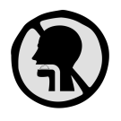
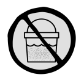
No Mixing with Other Disinfectants — Do not use SANI AMANZI™ alongside other disinfectants, sanitisers, acids, or ammonia.
Avoid Contact with Eyes
Do Not Ingest Anhydrous Powder
No Consumption of Coagulants/ Precipitate — can lead to unpredictable reactions and compromise the effectiveness of water treatment.
Sustainable water purification
SANI AMANZI™ embodies more than just effective water purification; it carries a deep commitment to environmental responsibility. When you choose SANI AMANZI™, you’re not only enhancing water quality but also actively contributing to a more sustainable future. The utilisation of innovative powder sachets, over liquid alternatives, significantly reduces transportation requirements, resulting in a decreased carbon footprint and a healthier planet for current and future generations.
Dedicated to reducing plastic waste and environmental impact, SANI AMANZI™ is meticulously designed to minimise, and whenever feasible, eliminate the use of plastic bottles. The groundbreaking powder sachets replace conventional liquid purifiers, offering a straightforward and eco-friendly solution. With just a sachet of SANI AMANZI™ and a container of water, you can harness the power of sustainable water purification.
Beyond being another water purifying product, SANI AMANZI™ symbolises a commitment to fostering healthier communities, free from the threats of waterborne diseases. As the urgency of the climate crisis grows, we acknowledge our responsibility to combat plastic pollution.
SANI AMANZI™ takes pride in championing a “plastic-free” ethos, providing pragmatic solutions that not only enhance well-being but also contribute to a cleaner environment.
Support
Frequently asked questions
The primary purpose of SANI AMANZI™ is two-fold. Firstly, it effectively eliminates waterborne pathogens that can lead to infectious diseases in humans. Secondly, it facilitates water clarification through a flocculation process.
Allowing the treated water to sit for 30 minutes is essential to provide sufficient time for the chemicals in SANI AMANZI™ to effectively neutralise the pathogens present in the water.
No. While we lead in successful water clarity, claims of any product making water clear every time, regardless of pH, are often misleading. We continue to research and develop new formulas to enhance clarity.
One 6g sachet of SANI AMANZI™ is suitable for treating 20 litres of contaminated water, ensuring its safety for consumption.
The diverse water sources across South Africa result in varying water chemistries. While water chemistry affects water clarity (flocculation), it does not impact the sanitation process.
Water clarity itself is not a health threat. The presence of waterborne pathogens in clear water, however, can be dangerous. SANI AMANZI™ is designed to eliminate these pathogens.
In highly contaminated water, SANI AMANZI™ might result in a slight chemical taste. When used in clear tap water without significant contamination, residual chemicals might lead to a mild taste. This taste, while not harmful, indicates the presence of protective agents against waterborne pathogens.
No, SANI AMANZI™ is not designed to remove sea salt from water.
SANI AMANZI™ serves as a Point-of-Use (POU) solution for governments, NGOs, and concerned companies dedicated to providing safe drinking water for all individuals.
Credentials
<{T} class="ulr-amanzi-badges">
Registered associations
Emergency readiness
Disaster response & government readiness
In situations such as:
- flooding
- infrastructure failure
- drought
- contamination events
- humanitarian emergencies
- municipal water interruptions
SANI AMANZI™ provides an immediate portable solution to support safer drinking water access at household and community level.
Its lightweight sachet format allows:
- rapid transportation
- simplified storage
- scalable deployment
- emergency reserve stock
- fast humanitarian distribution
Strategic Water Preparedness
From a public health and emergency response perspective, maintaining reserve stock levels supports rapid deployment during water crises.
Given Nigeria’s population of over 215 million people, scalable preparedness frameworks may involve maintaining millions of sachets monthly across regional emergency stock programs to support community-level water access during crisis situations.
Ubuntu Life Resources supports engagement with:
- governments
- NGOs
- disaster response organisations
- humanitarian programs
- institutional buyers
- distribution partners
Partner With Ubuntu Life Resources
We support scalable clean water initiatives across Africa and developing regions through practical water purification solutions designed for real-world deployment.

Point of contact
Sanchia-Lynn Smit
CEO / Founder, Ubuntu Life Resources